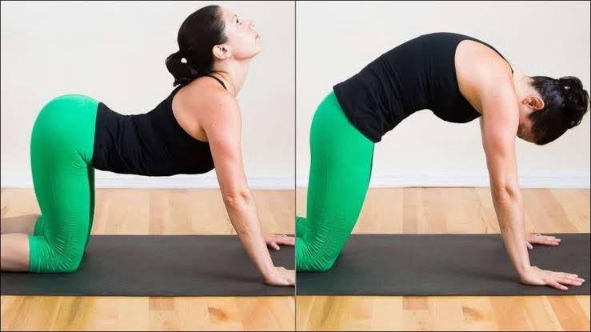

Cat-Cow pose
(Chakravakasana)
Cat-cow pose may help ease period pain because it can stretch the abdominal muscles, which may become tight and tense from cramping.
Learn MoreCat-cow pose may help ease period pain because it can stretch the abdominal muscles, which may become tight and tense from cramping.
Learn MoreOne of the best poses for any kind of pelvic pain. It helps open up your hips, which may feel tight before, during, and after your period.
Learn MoreHelps release tension and tightness in your abdominal fascia — the connective tissue surrounding your abdominal muscles
Learn MoreThe Sanskrit word "uttanasana" comes from "ut" meaning intense, and "tan" meaning to stretch. "Intense stretch" is a fitting name.
Learn MoreThis pose helps relieve pain by relaxing the pelvic floor muscles along with releasing tension in your lower back muscles.
Learn MoreIt stretches and strengthens the body, it boosts blood flow throughout the body, which may help relieve period pain.
Learn More